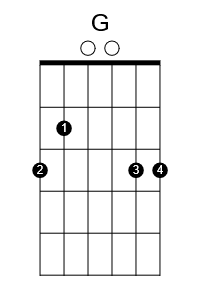
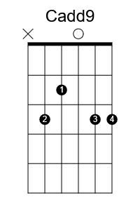
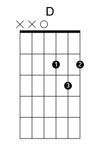

Peaches and Cream
By John Butler Trio
Chord Shapes
Em G Cadd9 Asus2 D
e|---0----3-----3------0------2-------|
B|---0----3-----3------0------3-------|
G|---0----0-----0------2------2-------|
D|---2----0-----2------2------0-------|
A|---2----2-----3------0--------------|
E|---0----3------------0--------------|
Em

G

Cadd9
Asus2

D
[Intro]
Em G Cadd9 Asus2 (x2)
[Verse]
Em G Cadd9 Asus2
Well there's far too many questions to ask,
Em G Cadd9 Asus2
To answer any of them tonight.
Em G Cadd9 Asus2
For I wear too many masks,
Em G Cadd9 Asus2
Too tell if any of them are wrong or right.
Em G Cadd9 Asus2
And confusion casts a shadow over me,
Em G Cadd9 Asus2
Like a great big cloud in the sky.
Em G Cadd9 Asus2
And now I pray for rain,
Em G Cadd9 Asus2
Cause it's been so long since i let myself cry.
[Pre-Chorus]
G Cadd9 D
For so long I've sang this sad ol' song,
G Cadd9 D
And it feels like my time is up.
G Cadd9 D
For she came and landed in my arms,
G Cadd9 D
And she filled my half empty cup.
Em Em
Yes she filled my half empty cup.
[Chorus]
Cadd9 Asus2 Em G
There you are right in front of me,
Cadd9 Asus2 Em G
A brand new day, sunrise over sea.
Cadd9 Asus2 Em G
No longer my cup half empty cause there you are,
Em G Cadd9 Asus2 Em
You and your mum in front of me, in front of me.
G Cadd9 Asus2
And now I look up above me,
Em G Cadd9 Asus2
And I thank that great ol' God in the sky.
Em G Cadd9 Asus2
For tellin' me my cup ain't half empty,
Em G Cadd9 Asus2
It took my little girl to show me why.
[Pre-Chorus]
G Cadd9 D
For so long I've sang this sad ol' song,
G Cadd9 D
And it feels like my time is up.
G Cadd9 D
For she came and landed in my arms,
G Cadd9 D
And she filled my half empty cup.
Em Em
Yes she filled my half empty cup
[Chorus]
Cadd9 Asus2 Em G
There you are right in front of me,
Cadd9 Asus2 Em G
A brand new day, sunrise over sea.
Cadd9 Asus2 Em G
No longer my cup half empty cause there you are,
Em G Cadd9 Asus2
You and your mum in front of me,
Em G Cadd9 Asus2
You're peaches & cream to me.
Em G Cadd9 Asus2
You both are peaches & cream to me. (scat)
Em G Cadd9 Asus2 Em G
(scat)
Cadd9 Asus2
All I know is
Em G
All I know and
Cadd9 Asus2 Em G
I love you...